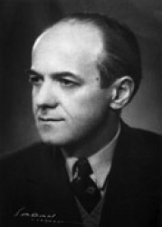

Ü
üç boyutlu duygu kuramı (tridimensional theory of feeling) Wund’un her duygunun üç boyutlu, üç bileşenli bir yapıyla anlatılabileceğini savunan kuramı. Bu bileşenler haz-hoşnutsuzluk (acı), gerilim-gevşeme ve heyecan (uyarım)-depresyondur.
üç günlük şizofreni (three-day schizophrenia) Yangın, sel baskını, çatışma, deprem gibi aşırı dış koşullarla tetiklenen ve heyecan, tutarsızlık, sanrılar, sistemli olmayan kuruntular gibi şizofreni belirtileriyle tanımlanan kısa süreli bir psikotik olay.
üç kromozomluluk (triploidy) İnsanda kromozom kümesinin üç kopyasının (69 kromozomun) her birinden üçer kopya bulunan bir anormallik. 32 kromozomun her birinden üçer kopya bulunan bu anormallik, sıklıkla kendiliğinden düşükle sonuçlanıyor.
üçlü (triad) Anne-baba-çocuk gibi dinamik bir ilişki içinde bulunan üç kişilik bir grup.
üçlü beyin kuramı (triune brain) Paul Mac Lean’ın, insan beyninin her birinin farklı üç evrimsel dönemden kaldığını; bir ölçüde birbirinden bağımsız antik, eski ve yeni olmak üzere üç bölümden oluştuğunu ileri sürdüğü kuramı. Bunlardan antik olanı omurilik, arka beyin ve orta beyin; eski olanı limbik sistem; yeni olanı ise yeni beyin kabuğudur.
üçlü sinir (trigeminal nevre) Beşinci ve en büyük kafa siniri. Göz, üst çene ve alt çene olmak üzere üç bölümden oluşan; hem duyu hem de devimsel sinir liflerini içeren bu sinirin devimsel lifleri; çiğneme, yutma ve dil devinimlerini denetliyor. Duyu lifleri de dişler, dil ve çene içinde olmak üzere aynı bölgeyi kapsıyor; bunun yanı sıra liflerden kimileri gözlere, yüze, kafa derisine ve beynin sert zarına uzanıyor. Bu sinirin duyu bölümündeki sorunlar, yüzde ağrıya ya da duyarsızlığa; devimsel bölümdeki sorunlar ise çenenin etkilenen yana kayması, çiğneme ve yutma güçlükleri gibi bozukluklara neden oluyor.
üçlü tarama (triple marker) Fetüste spina bifida, trisomi 18 ve trisomi 21 (Down sendromu) riskini belirlemek amacıyla gebeliğin genellikle ilk aylarında annenin kanından örnek alınarak yapılan bir genetik tarama testi. Bu test bugün rutin olarak yapılıyor. Bkz. alfa fetoprotein.
üç nevrotik gereksinim Bkz. bütüncü kuram.
üç renk kuramı (trichromatic theory) Young ve Helmholtz’un ortaya attığı ve renk algısının, retinadaki her biri ışığın farklı dalga boylarına duyarlı üç kan tipiyle (kırmızı, yeşil ve mavi ile) olanaklı olduğunu ve algılanan bütün renk tonlarının, bu üç rengin etkileşimli birleşimiyle gerçekleştiğini savunan bir renk algısı kuramı. Bkz. karşıt süreç kuramı.
üç renklilik (trivhromatism) Normal renk algısı; üç temel renk sistemini oluşturan açık-koyu, kırmızı-yeşil ve mavi-sarı renkleri birbirinden ayırt etme yetisi. Bkz. akromatizm; dikromatizm.
üç terimli olumsallık (three-term contingency) Ayırt edici uyarıcı, davranış ve bu davranışın sonuçları arasındaki ilişki. Güdülenen organizma, ayırt edici bir uyarıcının karşısında özel bir tepki veriyor. Çünkü bu tepki, yalnızca söz konusu ayırt edici uyarıcının bulunduğu durumlarda pekiştirilmiştir.
üçüncül döngüsel tepki (tertiary circular reaction) Piaget’ye göre, genellikle ikinci yaşa girişle başlayan ve çocuğun var olan şemalarını yeni durumlara uygun ve yaratıcı bir biçimde değiştirme çabaları. Çocuğun bu davranışları, istenen bir hedefe ulaşmak için yeni şemalar geliştirmesi bakımından, önceki davranışlarından farklıdır. Bkz. birincil döngüsel tepki; döngüsel tepki; ikincil döngüsel tepki; şema.
üçüncü odacık Bkz. silvius kanalı.
üçüncü sol alın Bkz.beyin.
üç X sendromu (triple X syndrome) Kadında iki yerine XXX olarak üç X kromozomunun (47 kromozomun) bulunmasıyla tanımlanan bir cinsellik kromozomu anormalliği. Önce akıl hastanelerindeki hastalarda belirlenmesi nedeniyle başlangıçta bunun zekâ geriliğinde bir etken olduğu düşünülmüş; ancak, sonraki araştırmalar, bunu doğrulamamıştır. Normal insanlar arasında da çocuk doğuran üç X kromozomlu kadınların bulunduğu görülmüştür.
ÜLKEN, Hilmi Ziya (1901-1974) Toplumun genel düzeyde bilgilenmesi yolundaki çabalarıyla tanınan Türk sosyolog ve felsefeci. Ülken, İstanbul’da doğdu; aynı kentte öldü. 1921’de Mülkiye Mektebi’ni bitirdi ve Edebiyat Fakültesi Beşeri Coğrafya Fakültesinde asistan oldu. Orta öğretimde çalışmak için üniversiteden ayrıldı. Bursa, Ankara liselerinde öğretmenlik, Bakanlığa bağlı kurumlarda bürokratlık yaptı. 1930-1933 arasında öğretmenliği İstanbul’da sürdürdü. Yayımladığı Umumi İçtimaiyat ve Türk Tefekkürü Tarihi adlı kitabıyla Atatürk’ün dikkatini çekti ve 1934’te araştırmalar yapmak için Almanya’ya gönderildi. Ertesi yıl döndüğünde İstanbul Üniversitesi Edebiyat Fakültesi Türk Tefekkür Tarihi Kürsüsü’nde doçent olşdu. 1938-1943 arasında İnsan adlı dergiyi çıkardı ve Uzun süre Edebiyat Fakültesi Sosyoloji Dergisi’ni yönetti. 1940’ta felsefe profesörü; 1942de sosyoloji profesörü; 1944’te sanat tarihi profesörü; 1957’de de ordinaryüs profesör oldu. 1960 Ekiminde 147 öğretim üyesiyle birlikte görevinden ayırıldı; ancak Ankara Üniversitesi İlahiyat Fakültesindeki ek görevine dokunulmadı. Göreve döndürüldüğünde Edebiyat Fakültesindeki görevini kabul etmedi. 1973’te emekli oldu. Osmanlı İmparatorluğu’nun son yıllarında düşünmeye ve yazmaya başlayan Ülken, Osmanlıcılık, İslamcılık ve Turancılık’a bir tepki olarak doğmuş olan Anadolu’yu temel alan milliyetçi düşünceye eğilim gösterdi. 1930 sonları ile 1940’ların başında Hümanizme ve Marksizme belli bir uzaklık çerçevesinde yatkın tutum gösterdi. 1951’de Tarihi Maddeciliğe Reddiye’yi yayımladı. Düşüncesi, süreç içinde idealizmden maddecikliğe yöneldi. Bilimsel çalışmalarını felsefi bir temele dayandırma eğilimi, yazar olarak onun sorunlara geniş bir perspektiften bakmasını sağladı. Bu yönelimi, İslam düşünürleriyle Batılı düşünürler arasında düşünsel koşutluk aramak biçiminde somutlaştı. İslam toplumlarındaki düşünsel gelişimi Batılı kaynaklarla açıklamaya çalıştı. Bu konuda en çok İsmail Hakkı İzmirl,i’den etkilendi. İslam düşüncesine ilişkin genellemeleri, genel geçer doğrular olarak nitelendirildi. Belirleyici çalışması, Türkiye’de Çağdaş Düşünce Tarihi’dir. Yapıt, alanında hâlâ tek olma özelliğini taşıyor. Her konuda felsefi düzeydeki yaklaşımıyla yazdığı 50’ye yakın yapıtta söylediklerinden çok aktardıkları önemli bulunuyor. Yazar, çalışmalarının kapsayıcı ve bilgilendirmeci özelliği ile önemli bir işlevi yerine getirmiştir. Başlıca yapıtları: Aşk Ahlakı, 1931; Umumi İçtimaiyat, 1931; Türk Tefekkürü Tarihi, 2 cilt, 1932-1933; İnsani Vatanperverlik, 1933; Uyanış Devrinde Tercümenin Rolü, 1935; İçtimai Doktrinler Tarihi, 1940; Ziya Gökalp, 1942 Dini Sosyoloji, 1943; İslam Düşüncesi,1946; Millet ve Tarih Şuuru, 1948; Tarihi Maddeciliğe Reddiye, 1951; Sosyolojinin Problemleri, 1955 Veraset ve Cemiyet, 1957; Siyasi Partiler ve Sosyalizm, 1963; Türkiyede Çağdaş Düşünce Tarihi, 2 cilt, 1966; Eğitim Felsefesi, 1967; İslam Felsefesi, 1967; Varlık ve Oluş, 1968; İlim Felsefesi, 1969.

ülkü (ideal) Ulaşılması çok güç olan yüce dilek; ideal. Bkz. ülküleştirilmiş imge; ülküleştirme; ülküsel benlik; ülküsel öz.
ülküleştirilmiş imge (idealized image) Psikanalize göre, kendi benliğinde gerçeklere uymayan üstün birtakım özellikler bulunduğu kuruntusuna kapılma.
ülküleştirme (idealization) Psikanalize göre, kişinin kendine ya da başkalarına abartılı olumlu özellikler yükleme biçiminde oluşturduğu savunma mekanizması; idealize etme. Bilinçli de bilinçsiz de çalışan bu mekanizma, ülküleştirilen nesne ya da olaya ilişkin eksik ve kusurların oluşturduğu ikircikli duyguları bilinçten uzak tutmayı sağlamanın yanı sıra, benlik gelişiminde de etken oluyor.
ülküsel benlik (ideal ego) Kişinin, ileride olmayı düşlediği kendisine ilişkin benlik; ideal benlik, benlik ülküsü. Kavram, kişinin henüz tam olarak başaramadığı, iyi bildiği bir konuyu sonuna dek savunan, insanlarla iyi ilişki kuran, kimsenin yanında ezilip büzülmeyen, herkesi olduğu gibi kabul eden bir kişi durumuna gelmek için duyduğu güçlü isteği; benlik ülküsünü dile getiriyor. Benlik ülküsü, kişinin sevmesini, istemesini büyük ölçüde yasaklamayan nitelikte olmalıdır. Çünkü çok sayıdaki yasaklar, insan benliğinin, dilek düzeyine erişmesini zorlaştırıyor. Bkz. inanç, kanı, değer; ruhsal-cinsel gelişim kuramı; yapısal kuram (Benlik).
ülküsel öz (ideal self) Karen Horney’ın nevroz kuramına göre, kendini, kendi yarattığı ülküsel imgeyle özdeşleştiren nevrotik kişinin, gerçekte de olduğuna inandığı kusursuz ve yüceltilmiş özü; olmak istediği kişi. Bkz. bütüncü kuram; gerçek öz.
üniversite (university) 1. Yüksek öğretim veren ve ülkelere göre fakülte (ana bölüm, bölüm ya da dal) ya da kolej diye adlandırılın kuruluşlardan oluşan bir bilim topluluğu. 2. Öğretim ve araştırma birimlerinin tümü. 3. Gerçekleştirdiği öğrenim karşılığında, yasa güvencesi olan birtakım derece, unvan ve diplomaları onaylama yetkisine sahip olan üst düzey öğretim kurumları. 4. Üniversite birim üyelerinin tümü. 5. Üniversitelerin içinde yer aldığı bina ya da kuruluşlar. 6. Genel olarak ilköğrenim, orta öğrenim ve yüksek öğrenim diye adlandırılan örgün eğitim basamaklarının sonuncusunun ilk iki dönemi ile bunun üzerinde yer alan eğitim. Yüksek öğrenim basamağının tavanını oluşturan üniversiteler, kuruluş ve işleyiş bakımından her ülkede değişiklik gösteriyor. Üniversitelerde şunlar ortaktır: (1) Her üniversitenin başında rektör ya da başkan bulunuyor. Her bölüm ya da fakültenin başında dekan görev yapıyor. Yönetim ve bilim konularında başkana yardımcılık eden kurullar bulunuyor. (2) Hemen her üniversite, aşağıdaki amaçlardan önemli bir bölümünü gerçekleştirmeye çalışıyor: (a) Bilim üretmek, bilime katkıda bulunmak amacıyla inceleme ve araştırma yapma ve bilim insanı yetiştirme. (b) Bilimsel bilgi ve becerilerle donatılmış meslek elemanları yetiştirme. (c) Bilimi yayma, halka ulaştırma ve öğrencilerine yardımcı olmak amacıyla onlara burs, pansiyon, yurt bulma, psikolojik danışma ve sağlık, geçici ve sürekli iş bulma, ucuz yiyecek, kitap ve gezi gibi kişisel ve toplumsal sorunlarının çözümünü sağlama. Bkz. yüksek okul; yüksek öğretim.
üniversite lisans öğrenimi (1. dönem) (undergraduatestudy) Üniversitede seçilen alanda ilk üniversite derecesini (lisansı) almak için yapılan örgün eğitim.
üniversite lisans üstü öğrenimi (2. dönem) (graduate study) Üniversitenin ilk üniversite derecesini (lisansı) aldıktan sonra daha üst bir derece almak için yapılan yüksek öğrenim.
üreme hücresi Bkz. siperm; yumurta.
üreme organı erotizmi (genitalerotism) Cinsel organın uyarılmasıyla sağlanan cinsel coşkular. Bu kavram, genellikle belirli beden bölgelerinin uyarıcı gücünü dile getirmek için kullanılıyor. Psikanalistler, cinsel dönemdeki uyaranlara gelişim yönünden öncelikli önem veriyorlar. Bkz. ruhsal- cinsel gelişim kuramı (Cinsel Dönem)
üretici-dönüşümsel dilbilgisi (generative-transformational grammar) 1. Dilbilimde dile temel oluşturan biçimsel kuralların gelişimini inceleyen dilbilgisi kuramı. 2. Bu biçimde gelişen kurallar. 3. Dilin tümce üretiminde yer alan biçimsel süreç terimleriyle çözümlenmesi gerektiğini savunan kuram. Bu kurama göre dilbilgisi, dilbilgisi ile ilgili öğelerden oluşan bir küme üzerinde çalışan ve olası birleşimlerden kimilerini dilbilgisi açısından doğru olarak tanımlayan bir kurallar sisteminden oluşuyor. Bu kurallar, her zaman olmasa da genellikle sözdizimsel yapılar halinde oluşturulabilecek dönüştürme kurallarını da belirliyor.
üretim (production) 1.Üretim etkenlerinin kullanılması ile otomobil, buz dolabı, makine yapan makineler gibi mal üretme süreci; istihsal. 2. Üretim etkenlerinin kullanımı ile hekimin hastalığı tanılayıp iyileştirmesi, sanat ürünleri yaratma, radyo ve televizyon programları hazırlama, öğrencileri yetiştirme gibi mal ve hizmet üretme süreci. 3. Üretim sürecinin sonunda ortaya konulan ürün. Üretim süreci, makine sayısı ve yetişmiş personelin yetişmemiş personele oranı gibi personel ve örgütsel özelliklerin yanı sıra, mal ya da hizmetin türüne de bağlı bulunuyor. İnsanlığın varoluşunun belirleyici koşulu ve insanı hayvandan ayırt eden başlıca özellik, üretimdir. İnsanlar üretirken yalnızca doğayı değil; kendilerini de etkiliyorlar. Bu nedenle üretim ve üretimin gelişimi, yaşamın temelini oluşturuyor.
üretim araçları (production) Üretimde kullanılan ve ilkel insan için taş, sopa, balta; çağdaş insan için makineler, kara yolları ve su yolları gibi her türlü araç ve nesne. Toplumun gelişiminde üretim araçları belirleyici etkendir. Üretim araçları ne kadar gelişmişse toplum da o kadar gelişmiş demektir. Bu araçların sahibi, toplumların yönetim biçimine göre değişiyor.
üretken bölge (genital zones) Erotik duyumların uyandığı üretken ve ona bitişik bölgeler.
üretken dönem Bkz. ruhsal-cinsel gelişim kuramı.
üretken elezerlik (phallic sadism) Psikanalizde çocuğun ruhsal-cinsel gelişiminin, üretken evre ile ilişkilendirilen saldırganlığı; fallik sadizm. Çocuk, cinsel ilişkiyi erkek; özellikle penis açısından, şiddet içerikli, delen, yırtan, zorla içine giren, kanatan ve benzerleri gibi saldırgan etkinlik olarak yorumluyor.
üretken evre Bkz. ruhsal-cinsel gelişim kuramı.
üretken insan Bkz. temel gerçekler.
üretken kadın (phallic woman) 1. Klasik psikanalize göre çocukların, kadının da penisi olduğuna inanması. Oedipus öncesi evrede çocuklar, iki cinsin de erkeklik organına sahip olduğunu sanıyor; kadınların penisinin bulunmadığını keşfettiğinde de onların iğdiş edildiklerini düşünüyorlar. Ancak, üretken kadın düşüncesinin bununla da sınırlı kalmadığı anlaşılıyor. Örneğin, değişik halk bilimi ürünlerinde ve mitlerde bu tür simgelere rastlanıyor. 2. Üretken döneme takılıp kalan ve sonuçta bilinçte penisten yoksun olduğunu yadsıyan ya da bilinçdışında bütün erkekleri iğdiş etmeyi isteyen kadın. Bkz. iğdiş karmaşası; ruhsal-cinsel gelişim dönemi.
üretken kişilik (phallic character) Psikanalize göre, iğdiş edilme korkusuyla ilgili tepki oluşumundan kaynaklanan davranış yapıları ortaya koyan bir kişilik; fallik kişilik. Övünme, aşırı özgüven, özsever büyüklenme, kimi zaman da saldırgan ya da gösterimci davranışlar, bu kişilik tipini oluşturan özellikler arasında yer alıyor. Bu yapının erkeklerde, kendini penisle özdeşleştirmeye dayandığı düşünülüyor. Kadınlarda ise penise imrenme, erkeksi davranışlar ya da erkeklere düşmanlık biçiminde beliriyor. Bkz. iğdişlik karmaşası; ruhsal-cinsel gelişim kuramı.
üretkenliğin gelişimi Bkz. insanın sekiz çağı ((7) Durağanlığa Karşı Üretkenliğin Gelişimi).
üretkenlik (generativity) Erik Erikson’un tanımladığı erişkinlik kutuplarından biri; yaratıcılık. Kişisel çıkar beklentisi olmadan, kişinin kendini yeni kuşakların geleceğine adayabilme yetisi. Bkz. insanın sekiz çağı ((7) Durağanlığa Karşı Üretkenliğin Gelişimi).
üretken öncesi dönem (pregenital stage) Freud’a göre, ilk çocukluk yıllarında libidonun öncelikle ağız ve dışkılama yoluyla doyurulduğu ve üretken bölgeye daha aktarılmadığı dönem. Bkz. ruhsal-cinsel gelişim dönemi.
üretken sevgi (phallic love) 1. Erkek çocukta penise; kız çocukta ise buna karşılık gelen klitorise duyulan sevgi; fallik sevgi. 2. Üretken evreye özgü sevgi. 3. (productive love) Erich Fromm’a göre, kendi kişiliklerini köreltmeden, bastırmadan başkalarıyla bağımsız, yakın ilişkiler kurabilen, karşısındaki insana karşı sorumluluk üstlenebilen, ona saygı ve özen gösteren sağlıklı kişilerin yaşadığı sevgi. Üretken yönelimin bir özelliği olan üretken sevgi, etkin bir çabayla gerçekleşiyor. Bkz. özgürlükten kaçış yaklaşımı.
üretken simge (phallic symbol) Psikanalize göre, panise benzeyen ya da penisi simgeleyen bir nesne; fallik sembol. Kalem, ağaç, sigara, silah, roket, uçak, kuş, otomobil, yılan, çiçek, çivi ve benzeri, bunlar arasında yer alıyor. Bkz. simge; simgecilik.
üretken ve yaratıcı eğitim Bkz. Türkiye’de eğitim (Türkiye Cumhuriyeti’nde Eğitim Devrimi ve Sonrası).
üretken yönelim (productive orientation) Erich Fromm’a göre, kendi gizilgüçlerini geliştirip gerçekleştiren; dış dünyaya gereksiz yere bağımlı olmadan bu gizilgüçleri kullanan; duygular, düşünceler, başkalarıyla ilişki kurma bağlamında etkin olan; aynı zamanda kendi ayrılığını ve benlik bütünlüğünü koruyabilme yetisine sahip olan kişilerin yönelimi.
üretme-tanıma (generation-recognition) Bellek konusunda birisi üretme, öbürü tanıma evresi olmak üzere iki evreli bir geri alma sürecini öngören ve anımsama ile tanımanın farklı süreçler olduğunu varsayan bir geri alma modeli.
üretral erotizm (urethral eroticism) Psikanalize göre, işeme eyleminden alınan haz. Bu evreye takılma, başkalarının üstüne işemeyle ilgili düşlemlere ya da isteklere yol açabiliyor. Bkz. ürolagni.
üretral evre (urethral stage) Psikanalize göre, rusal-cinsel gelişimin dışkıl dönemden üretken döneme geçişe karşılık gelen ve ikisinin de özelliklerini sergileyen bir dönemi. Çatışmanın sidik torbası denetimi üzerinde yoğunlaştığı bu dönemin başarıyla tamamlanmasının, kişide bir gurur ve beceriklilik duygusu ile cinsellik kimliğine yol açtığına inanılıyor. Bkz. ruhsal-cinsel gelişim kuramı.
üretral karmaşa (urethral complex) A. Murray’a göre, Freudcu ağızcıl dönem ve dışkıl dönem arasında kalan ve aşırı hırs, narsizm, ölümsüzlük takıntısı gibi özelliklerle tanımlanan bir ruhsal durum. Bkz. ruhsal-cinsel gelişim kuramı.
üretral kişilik (urethral character) Psikanalize göre, uzun süreli bir altını ıslatma geçmişiyle ve altını ıslatmayla ilişkili utanma ve küçük düşmeye karşı bir tepki oluşumu olarak kazanılan aşırı hırs, sebatsızlık ve böbürlenme gibi özelliklerle tanımlanan bir kişilik tipi.
ürkü Bkz. panik.
ürolagni (urolagnia) Sidik ve işeme konusunda hastalıklı bir takıntı; başkalarını işerken görmekten, cinsel ilişki sırasında üstüne işenmesinden ya da karşısındakinin üstüne işemekten, kendi sidiğini içmekten haz ya da cinsel heyecan duyma. Bkz. üretral erotizm; ürofili.
ürtiker Bkz. psikoterapi; ruhsal kökenli bedensel bozukluklar.
üstbenliğin gelişimi Bkz. yapısal kuram.
Üstbenlik Bkz. yapısal kuram.
üstbeyin Bkz. benlik; bilinç.
üstbiliş (metacognition) “Düşünme ile ilişkili düşünme”; kişinin kendi düşünsel süreçlerinin farkında olması. Kişinin nasıl öğrendiğini belirleyebilme, gözlemleyebilme ve buna uygun yeni stratejiler belirleme yetisi.
üst dil (metalanguange) 1. Bir başka dili çözümlemek ya da tanımlamak için kullanılan dil ya da simgeler kümesi. Örneğin, bir sözcüğü başka türlü belirten sözcükler ya da yabancı dil öğretiminde anadil. 2. İletişimi iyileştirmek amacıyla iki ya da daha fazla dilin özelliklerini taşıyan bir dil.
üst dilbilgisi (metalinguistics) Dil bilinci; daha açık söyleyişle dilin kullanımı, yapısı, içeriği ve benzerlerine ilişkin düşünme yetisi. Bkz. üst dil.
üst düzeyde koşullama Bkz. davranışçı psikoloji.
üst gereksinimler Bkz. gereksinimler aşama sırası.
üst işlev (superior function) Jung’un dört temel psikolojik tipinde, öne çıkarak öteki üçüne egemen olan ve onları alt işlevler durumuna indirgeyen işlev. Bkz. alt işlev; işlev.
üst kiyazmatik çekirdek (suprachiasmatic nuclei) Hipotalamusta bulunan ve gece-gündüz döngüsü gibi temel biyolojik ritimleri (biyolojik saati) düzenlediğine inanılan hücreler kümesi.
üstün çocuk Bkz. zekânın derecelendirilişi.
üstün gen Bkz. baskın gen.
üstün gereksinimler Bkz. ikincil gereksinimler.
üstün işlev Bkz. analitik psikoloji.
üstünlük arayışı (striving for superiority) Bireysel psikolojinin anahtar kavramı. Adler, insanın, aşağılık duygularını ödünlemeye ilişkin doğuştan gelen ve üstünlük (kendini gerçekleştirme) dürtüsüne sahip olduğunu savunuyor. Bu dürtü, toplumsal statü ya da başkaları karşısında egemenlikten çok, eksiklerini tamamlama ve kusursuz olma dürtüsü olarak tanımlanıyor. Bkz. bireysel psikoloji.
üstünlük çabaları Bkz. bireysel psikoloji.
üstünlük çalımı Bkz. bireysel psikoloji; eksiklik duygusu.
üstünlük duygusu Bkz. bireysel psikoloji.
üstünlük karmaşası (superiority complex) Kişinin başkalarınınkine göre kendi bedensel, zihinsel özellik ya da yetilerine, gerçeğe uymayan aşırı, abartılı bir önem vermesine ve kendini herkesten üstün, önemli görmesine yol açan karmaşa. Adler’in belirttiği gibi üstünlük karmaşası, sıklıkla aşağılık karmaşasına karşı bir savunma olarak geliştiriliyor. Bkz. karmaşa; bireysel psikoloji.
üstün olma çabaları Bkz. bireysel psikoloji.
üstün olma isteği Bkz. bireysel psikoloji; eksiklik duygusu.
üstün özel yetenek Bkz. özel yetenekler.
üstün yetenekli Bkz. yetenek; zekânın derecelendirilişi.
üstün yetenekli çocuk (gifted child) Yaşıtlarının çoğundan üstün öğrenme ve eğitilme gücü olan çocuk.
üstün yetenekliler Bkz. eğitim; üstün zekâlı çocuklar; özel yetenekler.
üstün zekâlı çocuklar Bkz. zekânın derecelendirilişi.
üstün zekâlıların eğitimi (education of gifted learners) Standart zekâ ve başarı testlerinde yaşıtlarının ortalamasının yüzde 98’inin üzerinde olanların eğitimi. Bunların eğitimi için şimdiye dek çeşitli uygulamaların yapıldığını görüyoruz. Bunlardan biri, hızlandırma denilen uygulamadır. Bu uygulamada bu çocukların okula daha küçük yaşta başlamaları öngörülüyor. Bir yandan da özellikle ilk ve orta öğretimde sınıf atlama olanağı veriliyor. İkincisi, özel sınıf uygulamasıdır. Büyük kentlerde yaygın olarak uygulanmıştır. Bu uygulamada kent okullarından belirli bir tabanın üzerinde yeteneği olan öğrenciler seçiliyor. En çok 15’er kişilik sınıflar biçiminde, normal okullara bağlı özel sınıflarda özel öğretmenlerle yetiştiriliyorlar. Bu öğrenciler, belirli öğrenim alanları ve okul etkinliklerini öbür öğrencilerle birlikte yürütüyorlar. Üçüncüsü, türdeş yetenek sınıfları ve kümeleridir. Bu uygulama da büyük kent okullarında yapılabiliyor. Okula yeni başlayanlar ölçülüp değerlendirildikten sonra A., B. Ve C bölümleri adı ile üstün, orta, ağır öğrenen diye üç kümeye ayrılıyor. Her bölümde, yetenek düzeyine uygun öğretim programı uygulanıyor. Her okulda uygulanabilecek olanı budur. Bu uygulamalar, şu açılardan eleştirilmiştir: Öğrenciler, yeteneklerine göre kümelendiriliyor. Oysa zekâ bölümü rakamının altında, çeşitli düzeylerde gelişmiş özel yetenekler yatıyor. O nedenle türdeş saydığımız kümeler, gerçekte türdeş değildirler. Örneğin, matematikte başarıyı belirleyen özel yetenekler, aynı kümede bulunan üç öğrenciden birinde üstün; ikincisinde orta; üçüncüsünde de ortanın altında bir gelişim gösterebiliyorlar. Zekâ bölümleri eşit diye bunların üçüne de aynı düzeyde matematik programı uygulanamaz. O nedenle öğrenciler, başarabilirlerse ancak özel yetenek kümelerine ayrılabilirler. Dördüncüsü, program zenginleştirmedir. En çok benimsenen ve yaygınlaşan uygulamalardan birisi budur. Üstün yetenekli öğrenci, yaşına uygun bir sınıfta bulunuyor.Yalnız, özel ya da gezici öğretmenlerin yardımıyla normal programın dışında ve üstünde, özellikle ilgi ve özel yeteneklerine uygun konularda daha ileri düzeyde öğrenim görüyor. Yabancı dil, güzel sanatlar, müzik, teknik, fen bilgileri, matematik, bunlardandır. Bunlar için gerekli yer ve zaman ayrılıyor. Beşincisi, bireysel öğretimdir. Özellikle zekâ düzeyleri 180 ve daha yukarı olan çocuklarla çok üstün düzeyde müzik ve resim gibi alanlarda üstünlük gösterenlerin devlet hesabına yurt içinde ya da yurt dışında özel öğretmenlerle yetiştirilmesini içeriyor. Altıncısı ise özel okuldur. Bu da büyük kentlerde ya da ülke çapındaki taramalarla belirlenen, belli bir yetenek tabanı üstünde olanlar, bu özel okullara alınıp devlet hesabına yetiştiriliyorlar. Bunlar, gündüzlü, yatılı ya da hem gündüzlü hem de yatılı olabiliyor. Bizdeki örneği, Ankara Fen Lisesidir. Bu kurumda üstünler, özel programlar ve özel yetiştirilmiş öğretmenlerle en uygun araç gereç, ve yöntemlerle eğitilme olanağına kavuşmuşlardır. Bkz. özel eğitim; zekânın derecelendirilişi.
üstün zekâlılık Bkz. zekânın derecelendirilişi.
üst üste binme (interposition) Derinlik algısında monoküler bir ipucu. Önünde bulunması nedeniyle başka bir nesneyi kapatan bir nesne, ondan daha yakın görünüyor.
üst yapı (super structure) Beslenme, barınma ve iletişim olanaklarından oluşan altyapı üzerinde gelişen toplumsal yaşamın paylaşılan anlamları, düşünceleri, inançları, değer yargıları ve ideolojileri; bilim, sanat, müzik, din, eğitim, hukuk, siyasal yapı ve benzeri kurumlarının tümü.
ütopya (utopia) İnsanların, gizilgüçlerini gerçekleştirdiği, üretken ve mutlu bir yaşam sürdürdüğü; yasaların, kamu düzeninin kusursuz olduğu bir yer, çağ, toplum ideali, ileri görüşü. Yunanca “u+topia: Hiçbir yer” ya da “eu+topia: Güzel yer” anlamına gelen ütopya, Sir Thomas More’un Ütopya adlı yapıtı ile literatüre geçti. Buna göre din, Marksizm gibi ideolojiler, birer ütopyadır. Psikolojide de açık ya da örtülü ütopyalar vardır. Psikanalizden davranışçılığa, varoluşçuluğa dek her kuram (ekol), kendi ütopyasını birlikte getirmiştir. Bunlardan en açık biçimiyle ortaya konulanı, B. F. Skinner’in Walden Two adlı yapıtıdır. Bkz. distopya.
üvey çocuk düşlemi (foster child fantasy) Çocuğun, anne babasının onun gerçek anne babası değil; üvey anne babası olduğuna inanması. Bu, çocuklar arasında oldukça yaygın bir düşlem ya da sanrıdır.
üzgü (unnecessary trouble/saddening) Yersiz ve gereksiz çektirilen ya da çekilen sıkıntı; cefa, eziyet.
üzgü sabuklaması (delusion of persecution) Bilinçdışı suçluluk ve günahkârlık duyguları nedeniyle çevresindeki insanların kendine kötülük ve zarar getirecek düzen ve davranışlar içinde bulundukları inancı.
üzüntü (worry) İstenilen bir şeyin gerçekleşmemesinden ya da olmaması istenen olaylardan doğan ruh tedirginliği. Bkz. acı.